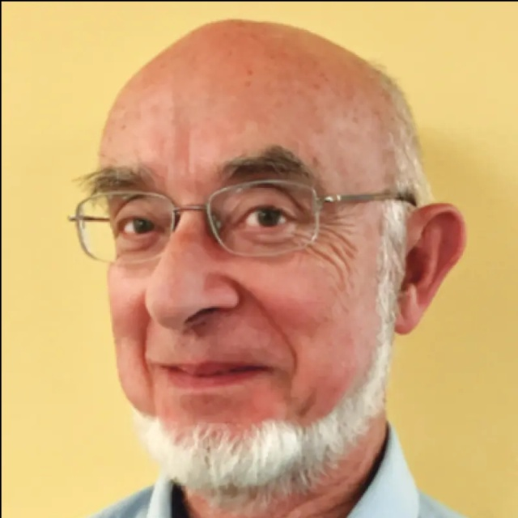
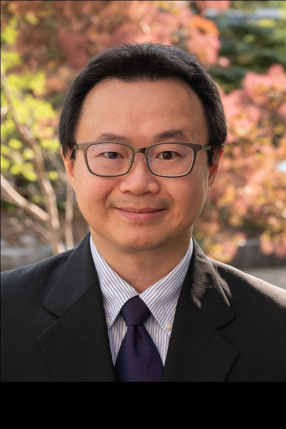
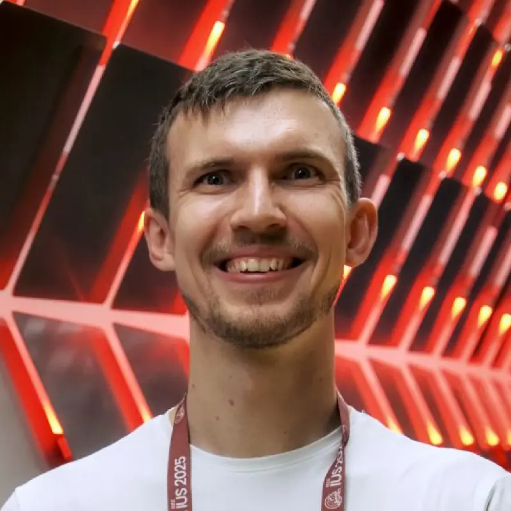
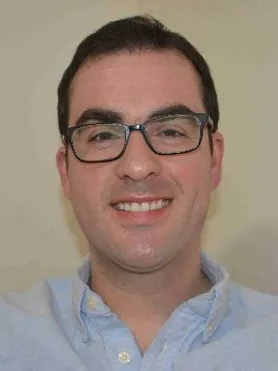
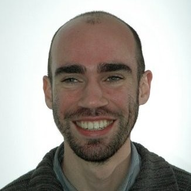
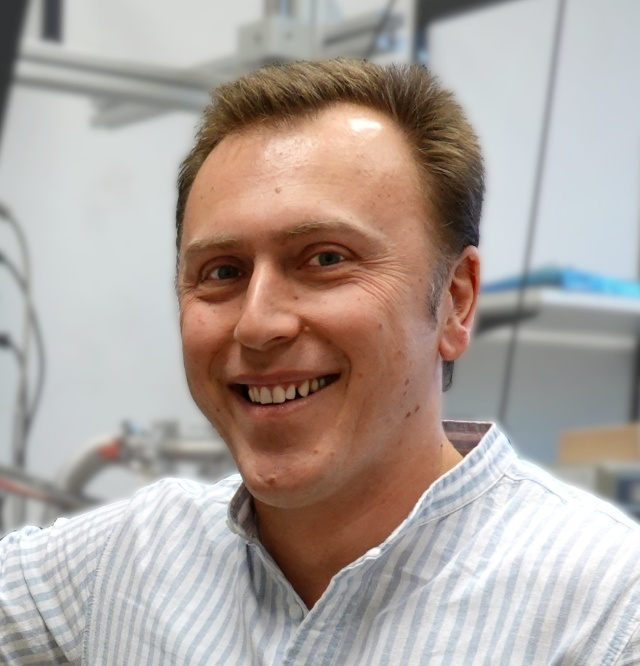
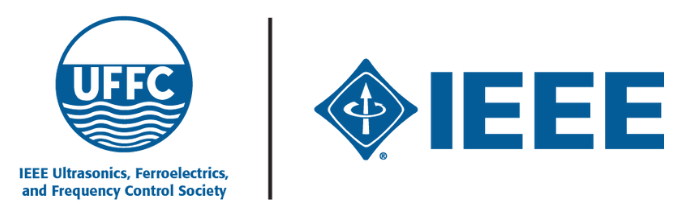
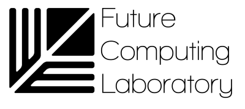

IEEE CEEUS 2026
The 1st IEEE Central and Eastern European
Ultrasonics Symposium, 22-24 JUN 2026, Warsaw, POLAND
Ultrasonics Symposium, 22-24 JUN 2026, Warsaw, POLAND
| START | ABOUT |
TRACK TECH |
TRACK WEARABLES |
TRACK NDT |
TRACK MEDICAL |
| 9:00 - 9:20 | Welcome and opening remarks. |
| We would like to welcome all participants to the 1st IEEE Central and Eastern European Ultrasonics Symposium (CEEUS-2026). We are excited to bring together researchers, practitioners, and industry experts from across the region to share their latest findings and innovations in the field of ultrasonics. This symposium is a unique opportunity for networking, collaboration, and knowledge exchange, and we look forward to a productive and inspiring event. |
| 12:00 - 13:00 | When Sound Becomes Medicine: Biomedical Ultrasound as the Interdisciplinary Science |
| Dr. Peter A. Lewin @ School of Biomedical Engineering, Drexel University, Philadelphia, USA. |
| 9:00 - 9:45 | High-Frame-Rate Ultrasound Imaging in the Deep Learning Era |
| Dr. Alfred C. H. Yu — Professor, Associate Vice-President (Partnerships, Entrepreneurship, and Commercialization) @ University of Waterloo, LITMUS, Canada. |
| 9:45 - 10:30 | _ |
| _ |
| 10:30 - 11:15 | New Adventures in CEUS using Sub-micron Bubbles |
| prof. Agata Exner – Henry Willson Payne Professor & Vice Chair for Basic Research, Department of Radiology Professor, Department of Biomedical Engineering Co-Director, Medical Scientist Training Program Case Western Reserve University / University Hospitals of Cleveland, Ohio, USA. |
| 9:00 - 9:45 | Designing ultrasound systems for brain research across different spatial scales |
| Mark E. Schafer, PhD, FAIUM, FASA, FAIMBE @ Rockefeller Neuroscience Institute, West Virginia University, USA. |
| 9:45 - 10:30 | _ |
| _ |
|
 Dr. Peter A. LewinTITLE: When Sound Becomes Medicine: Biomedical Ultrasound as the Interdisciplinary Science |
| The purpose of this talk is to introduce the breadth of multidisciplinary development that enabled marvelous advances in the field of biomedical ultrasound. Over the past century this field has evolved into one of the most profoundly interdisciplinary domains in modern science and medicine. That was achieved by a close collaboration between the scholars working on the intersection of biology, chemistry, physics, engineering, and clinical practice. The talk will attempt to demonstrate how interdisciplinary background of ultrasound researchers led to the unprecedented rise of ultrasound from a primarily diagnostic modality into a versatile platform for precision imaging, targeted therapy, and neuromodulation. Selected examples will highlight the transformation of diagnostic ultrasound into a plethora of therapeutic treatments. High-frequency (15 MHz+) ultrasound, elastography, and contrast-enhanced techniques now enable real-time visualization of tissue architecture, perfusion, and mechanobiological changes with exceptional submillimeter resolution. In parallel, therapeutic ultrasound has entered a new era defined by noninvasive, cell-specific interventions. Low-intensity (<1W/cm2) focused ultrasound (LIFU) and ultrasound-mediated drug delivery are emerging as transformative tools in neuroengineering and the treatment of the neuropsychiatric disorders. By modulating neural activity without surgery, ultrasound offers promising avenues for managing Parkinson’s disease, Alzheimer’s pathology, chronic pain, and addiction. Presentation of the comprehensive chart of applications will deliver the audience coherent and lucid view of the opportunities to work with the ultrasound technology in academic, industrial and clinical environment. |
|
 Dr. Alfred C. H. YuTITLE: High-Frame-Rate Ultrasound Imaging in the Deep Learning Era |
| Ultrasound is undoubtedly a popular medical imaging modality and is becoming known for its high-frame-rate imaging capabilities. However, high-frame-rate ultrasound has yet to flourish in point-of-care applications due to the lack of suitable portable hardware, and its ability to offer time-resolved flow visualization is hampered by Doppler aliasing artifacts. Can we take advantage of deep learning to overcome bottlenecks in high-frame-rate system design? Can we design neural networks to resolve Doppler aliasing artifacts in real time? This seminar will introduce our laboratory’s quest to learn deep and learn smart about ultrasound imaging systems to make high-frame-rate ultrasound viable for portable use and flow estimation. We will demonstrate how deep learning solutions can be devised to resolve data transfer bottlenecks in ultrasound systems and, in turn, enable robust generation of high-frame-rate ultrasound images with data acquired from few array channels. We will also show how deep learning has enabled the design of advanced Doppler flow imaging platforms with lucid flow visualization performance. Related algorithms, real-time engineering efforts, and clinical applications will be presented throughout the presentation. |
|
Mark E. Schafer, PhD, FAIUM, FASA, FAIMBE TITLE: Designing ultrasound systems for brain research across different spatial scales |
| Ultrasound is being used in clinical studies to treat such neurological issues as addiction, anxiety, depression and even coma, and to facilitate the uptake of drugs for Alzheimer’s. However, there are still fundamental questions regarding ultrasound interaction with neural tissues. This talk describes the design of ultrasound exposure systems applicable to a wide range of experimental situations, from fruit flies (Drosophila melanogaster), through rodents, and to humans, representing six orders of magnitude in brain tissue volume. First, the design details of a sub-millimeter 100kHz exposure source for stimulation of fruit fly neurons will be presented. Here, the primary challenge was creating a source that would fit into a 300μm aperture. Moving up in scale, transducers in the low megahertz range were designed to expose select portions of a rodent brain, leaving nearby areas unexposed to serve as a control. Finally, systems for clinical (human) use have completely different design requirements. Clinical data show positive results for several neurological conditions, most remarkably for the treatment of addiction. In summary, ultrasound transducer technology can encompass a wide range of experimental requirements, supporting new areas of research and discovery in brain science, and new treatment options for patients. |
|
 Dr. Sergei VostrikovTITLE: Open-source wearable ultrasound platforms: a rocky path from lab prototype to public knowledge |
| The idea of fully open-source wearable hardware has sparked growing interest in the ultrasound community in recent years, promising transparency, flexibility, and full control over system design, all of which are essential for research. Yet despite this enthusiasm, turning a research prototype into a useful open-source resource remains a complex task. What practical challenges arise when developing and sharing wearable-ultrasound designs? Why should wearable ultrasound be open source in the first place? And what defines a good and sustainable open-source project? This talk is structured around these questions. It reflects on the practical realities of open-source development in wearable ultrasound, outlines the current state of the field, and discusses future directions. |
|
Prof. Sheng Xu TITLE: Wearable ultrasound technology |
| The use of wearable electronic devices that can acquire vital signs from the human body noninvasively and continuously is a significant trend for healthcare. The combination of materials design and advanced microfabrication techniques enables the integration of various components and devices onto a wearable platform, resulting in functional systems with minimal limitations on the human body. Physiological signals from deep tissues are particularly valuable as they have a stronger and faster correlation with the internal events within the body compared to signals obtained from the surface of the skin. In this presentation, I will demonstrate a soft ultrasonic technology that can noninvasively and continuously acquire dynamic information about deep tissues and central organs. I will also showcase examples of this technology's use in recording blood pressure and flow waveforms in central vessels, monitoring cardiac chamber activities, and measuring core body temperatures. The soft ultrasonic technology presented represents a platform with vast potential for applications in consumer electronics, defense medicine, and clinical practices. |
|
 Dr Tiago L. CostaTITLE: Miniaturized and power-efficient focused ultrasound microsystems for wearable and implantable ultrasound neuromodulation. |
| Transcranial ultrasound stimulation is emerging as a promising modality for non-invasive neuromodulation, with the ability to reach deep brain targets with a spatial selectivity that is difficult to achieve with other techniques. More recently, there has been growing interest in moving this therapy beyond the hospital setting, towards wearable and, in the longer term, implantable ultrasound systems for both neuromodulation and brain computer interfaces. This transition, however, requires a substantial reduction in both power consumption and device size. Conventional ultrasound hardware typically relies on bulky driving electronics, a limited number of transducer channels, and assembly approaches that do not scale well to compact high-density arrays. In this talk, I will present our work on miniaturized phased-array technologies for wearable and implantable ultrasound neuromodulation, with particular emphasis on electronic circuit and microfabrication strategies that improve power efficiency while enabling scalable integration. Our approach brings semiconductor and advanced packaging technologies into the ultrasound domain, combining the co-design of electronic drivers, array architectures, and microfabricated acoustic interfaces. On the electronics side, I will discuss methods to improve the efficiency of integrated multi-channel stimulators. On the device side, I will describe microfabrication routes that enable dense integration of piezoelectric transducers with electronics with minimal loss in acoustic performance. Together, these developments aim to establish a technological path towards focused ultrasound neuromodulation devices suitable for future wearable and implantable systems. |
|
 Prof. Mathias KersemansTITLE: Ultrasound Meets Composites: Imaging Damage, Structure and Stiffness |
|
Ultrasonic inspection remains the gold standard for non-destructive evaluation of fiber-reinforced polymers in the aerospace industry. However, the full potential of ultrasound for characterizing these complex materials is still far from fully realized.
In this talk, we present recent advances in ultrasonic inspection of fiber-reinforced polymers, highlighting how ultrasound data can be leveraged to enable novel imaging modalities. Specifically, we demonstrate: (1) Damage imaging, using statistical time–energy analysis to resolve complex and distributed defects; (2) Structural imaging, employing a tomographic approach to reconstruct the three-dimensional multilayered fiber architecture; (3) Functional imaging, based on inverse methods to identify the anisotropic viscoelastic stiffness tensor. For each imaging modality, the underlying principles are briefly introduced and supported by experimental demonstrations, illustrating the potential of ultrasound as a comprehensive tool for advanced material characterization. |
|
 prof. Hanuš SeinerTITLE: Studying Crystal Acoustics Using Lasers — Recent Progress |
| Laser-ultrasonic (LU) methods are experimental techniques utilizing laser beams for generation and detection of ultrasonic waves and vibrations. These methods, thus, enable characterization of mechanical properties of solids without mechanically touching them. During the past two decades, several unique LU experimental arrangements have been developed at the Institute of Thermomechanics, among which LU measurements of anisotropic acoustic properties of single crystals have achieved particular recognition. These approaches allowed us to contribute to developing new alloys for applications ranging from bone implants, over flexible electronics, to space research. The lecture will present two our recent advancements in this direction: reaching Weyl’s asymptotic behavior in resonant ultrasound spectroscopy, and detecting ultra-transient oscillations in transient-grating experiments. Both these advancements have close relations to mathematical foundations of elastodynamics. In the former, we observe statistics of several hundreds of experimentally obtained eigenvalues and eigenvectors of an operator representing a freely vibrating single crystal; in the latter, we obtain a direct visualization of Green’s function for a hyperbolic differential operator representing elastodynamics of a free surface. |
|
prof. Agata Exner TITLE: New Adventures in CEUS using Sub-micron Bubbles |
| Dr. Exner is the Director of the CWRU Center for Imaging Research, Henry Willson Payne Professor and Vice Chair for Basic Research in the Department of Radiology, and Professor of Biomedical Engineering at Case Western Reserve University School of Medicine in Cleveland, Ohio. Dr. Exner is an internationally recognized leader in molecular imaging and theranostics – her multidisciplinary research at the interface of nanomedicine and biomedical ultrasound and focuses on development of novel platform technologies for molecular imaging and image-guided drug delivery. Under this umbrella her research group has pioneered the development of long-circulating ultrasound responsive targeted nanobubbles - a versatile platform with potential use as cancer cell specific agents for early disease diagnosis, as companion diagnostics for prediction of tumor heterogeneity and vascular permeability and as cell specific cavitation agents for ultrasound-mediated therapy. Her research has been continuously funded by the NIH for over 20 years. Dr. Exner is an elected Senior Member of the National Academy of Inventors, Fellow of the American Institute for Medical and Biological Engineering, and Distinguished Investigator of the Academy of Radiology Research. At CWRU, Dr. Exner is also an Associate Director of the Case Medical Scientist Training Program, and a co-leader of the Comprehensive Cancer Center Cancer Imaging Program. |
 |
||
 |
||